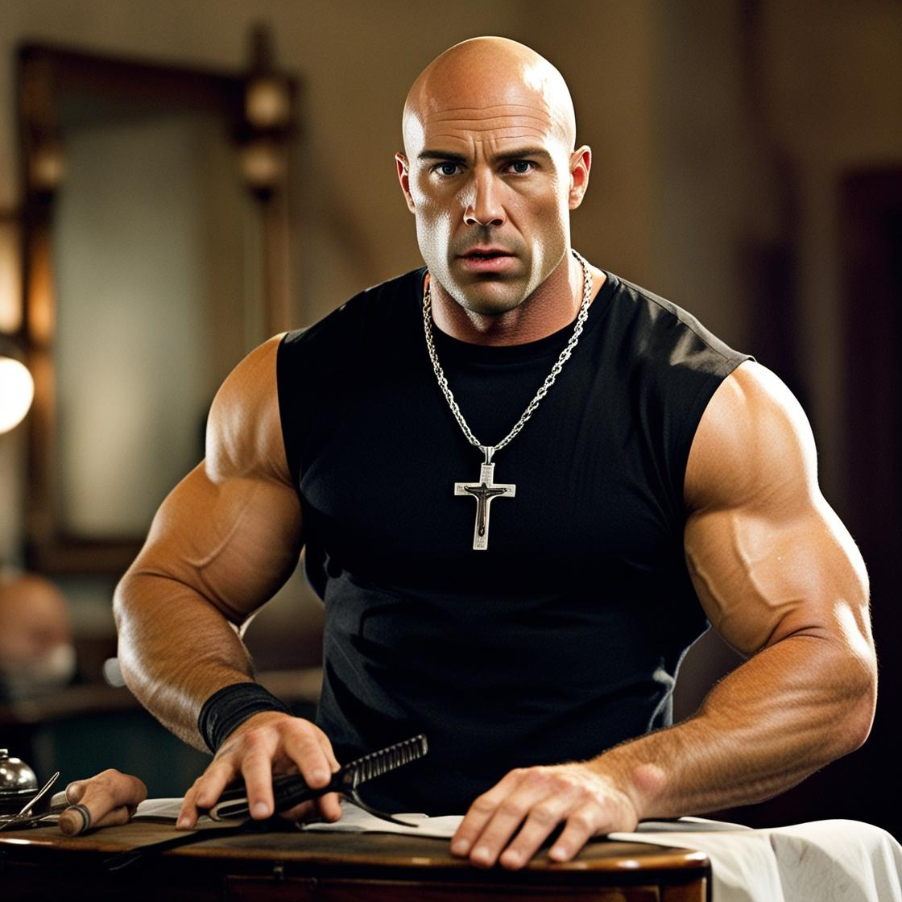
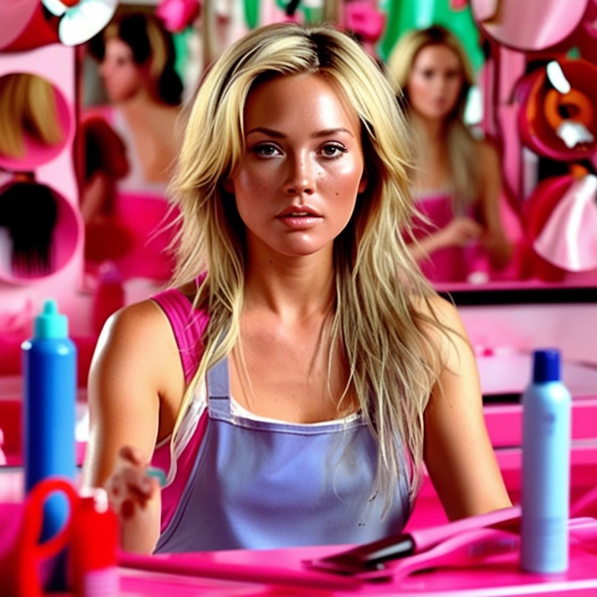

Dominic Tesoura

Dominic Tesoura é um barbeiro experiente, conhecido por sua habilidade em cortes rápidos e precisos. Com anos de experiência, ele é o favorito entre os clientes que buscam um visual másculo e clássico dos anos 70.
Brian O' Corte
Brian O' Corte é um barbeiro veloz e furioso com as tesouras. Ama cortes de estilo japones, é conhecido por deixar os clientes com ar jovial e moderno.
Roman Penteado
Roman Penteado é um barbeiro extremamente animado. Ele anima qualquer um com suas piadas e brincadeiras durante sua presença. Mas nunca pergunte para ele o que o botãozinho faz!
Suki

Suki é uma barbeira que veio do oriente, especialista em cortes femininos. Grande rival do barbeiro Brian O' Corte, definitivamente detesta quando os clientes escolhem ele no lugar dela e fala "Droga, é o Brian!". Também conhecida pelo parentesco do grande aluno do IFPR Lucas Aoki!